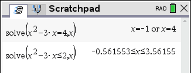
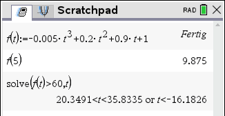
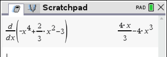
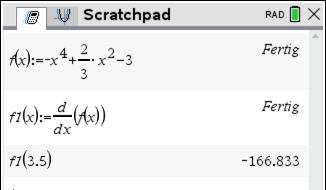
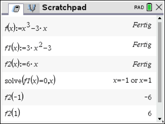
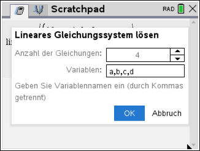
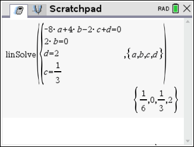

CAS Cheat Sheet
Nullstellen bestimmen
Bestimme die Nullstellen von
f(x) = −1/2x² + 3x − 4
solve aufrufen
solve( eintippen
b + 3 + 1
Algebra › Lösen
Gleichung und Variable eingeben
Funktionsterm =0, dann Komma und x. Mit · bestätigen.

Ergebnis aufschreiben
Der Rechner zeigt x=2 or x=4.
Steht dort false, gibt es keine Nullstellen.
x-Werte bestimmen
Gegeben ist die Funktion f mit f(x) = x² − 3x. Bestimme die Stellen,
- an denen f den Wert 4 annimmt.
- an denen f Werte kleiner gleich 2 annimmt.
solve aufrufen
Hinweis: Genauso wie bei den Nullstellen, nur steht rechts nicht 0.
solve( eintippen
b + 3 + 1
Algebra › Lösen
Gleichung und Variable eingeben
a) solve(x^2-3*x=4,x)
b) solve(x^2-3*x≤2,x)

Ergebnis aufschreiben
Funktion definieren, Funktionswerte & x-Werte
Die von Bakterien bedeckte Fläche wird durch die Funktion A mit A(t) = −0,005t³ + 0,2t² + 0,9t + 1 modelliert (t in h, A(t) in cm²).
- Welche Fläche ist um 5 Uhr (t = 5) bedeckt?
- Wann ist die Fläche größer als 60 cm²?
Funktion definieren
Mit := speichern. Das Zeichen bekommst du mit:
/ + t
f(t):=-0.005*t^3+0.2*t^2+0.9*t+1

Funktionswert berechnen
f(5) eingeben → 9,875
x-Wert mit solve
solve(f(t)>60,t)
Die Lösung t < −16,18 entfällt, weil die Zeit nicht negativ ist.
Ableitung bestimmen (bzw. definieren)
Funktion f mit f(x) = −x⁴ + 2/3x² − 3
- Bestimme die Ableitung von f.
- Definiere die Ableitung und berechne f ′(3,5).
Funktion ableiten
Ableitungsvorlage öffnen:
g + -
Unten x, in die Klammer den Funktionsterm.

Funktion f definieren
f(x):=-x^4+2/3*x^2-3

Ableitung als f1 definieren
f1(x):=, dann die Ableitungsvorlage g + - mit f(x) füllen.
Funktionswert der Ableitung
f1(3.5) eingeben.
Lokale Extremstellen bestimmen
Bestimme alle lokalen Extremstellen von f(x) = x³ − 3x und ihre Art.
Funktion und Ableitungen definieren
f(x):=x^3-3*x, dann f1 und f2 mit der Ableitungsvorlage g + -.

Notwendige Bedingung mit solve
solve(f1(x)=0,x) → x=-1 or x=1
Hinreichende Bedingung mit f2
f2(-1) und f2(1) berechnen.
Lineares Gleichungssystem (LGS) lösen
Gesucht ist eine Funktion 3. Grades, deren Graph bei x = −2 die x-Achse schneidet und bei x = 0 eine Wendetangente t(x) = 1/3x + 2 hat.
LGS mit Bedingungen aufstellen
Ansatz: f(x) = a·x³ + b·x² + c·x + d
| I | f(−2) = 0 | ⇔ | −8a + 4b − 2c + d = 0 |
| II | f(0) = 2 | ⇔ | d = 2 |
| III | f ″(0) = 0 | ⇔ | 2b = 0 |
| IV | f ′(0) = 1/3 | ⇔ | c = 1/3 |
LGS-Vorlage öffnen
b + 3 + 7 + 2
Anzahl der Gleichungen 4 und Variablen a,b,c,d eintragen, dann OK.

Die vier Gleichungen eintragen
Jede Gleichung in eine Zeile der Vorlage, dann ·.

Lösung interpretieren
Der Rechner liefert a = 1/6, b = 0, c = 1/3, d = 2.